Phân tích nghiệp vụ cho module eKYC của Aegis Bank (ngân hàng giả định): chụp giấy tờ, đọc chip CCCD / hộ chiếu, xác thực khuôn mặt, sàng lọc rủi ro và hàng đợi xét duyệt cho bộ phận Compliance.
Business analysis for the eKYC module of Aegis Bank (a fictional bank): ID capture, chip reading for citizen ID cards and passports, face verification, risk screening and a review queue for Compliance.
Bài toánThe problem
Rà soát luồng eKYC hiện có với quy định của Ngân hàng Nhà nước, luật bảo vệ dữ liệu cá nhân và luật phòng, chống rửa tiền cho thấy nhiều khoảng trống – cả về tuân thủ lẫn vận hành.
Reviewing the existing eKYC flow against central bank rules, data protection law and anti-money-laundering law exposed gaps in both compliance and operations.
Trước và sau khi hoàn thiện moduleBefore and after the work
3 mục còn một phần đang chờ nhà cung cấp sinh trắc và Compliance chốt thời hạn lưu hồ sơ.The 3 partial items wait on a biometrics vendor and Compliance's decision on retention periods.
Cách làmApproach
Truy vết hai chiều: văn bản → yêu cầu → quy tắc → story Jira → màn hình → test case. Đổi một ngưỡng là biết ngay màn nào và case nào bị ảnh hưởng.
Two-way traceability: regulation → requirement → rule → Jira story → screen → test case. Changing a threshold shows exactly which screens and tests are affected.
Đối chiếu luồng hiện có với 5 nhóm văn bản, lập 15 yêu cầu tuân thủ.
Compared the flow with 5 groups of regulations; logged 15 compliance requirements.
C0211 BR, 11 FR, NFR, mô hình trạng thái hồ sơ và ma trận truy vết.
11 BRs, 11 FRs, NFRs, a case state model and a traceability matrix.
C03 · ISO/IEC/IEEE 29148Bảng quyết định trùng khách, hợp lệ giấy tờ, Maker-Checker, SLA, velocity.
Decision tables for duplicates, document validity, maker-checker, SLA, velocity.
C04–C13 · BABOK v3Swimlane xử lý hồ sơ REFER, ma trận thông báo, leo thang SLA 24 giờ.
Swimlane for flagged cases, notification matrix, 24-hour SLA escalation.
C07–C1020 màn app khách và 6 màn Compliance, có ảnh, nội dung, lỗi và API từng màn.
20 customer screens and 6 Compliance screens with copy, errors and API per screen.
U01–U02 · WCAG 2.2Prototype web và backend mẫu chạy đúng các quy tắc, để chứng minh đặc tả làm được.
A web prototype and sample backend implement the rules, proving the spec is buildable.
16 hồ sơ mẫu / test personasKế hoạch, 106 test case, báo cáo vòng 1, kế hoạch SIT và bộ UAT có biên bản.
Test plan, 106 test cases, round-1 report, SIT plan and a UAT pack with sign-off.
T01–T03, C15–C17 · ISO/IEC/IEEE 29119-3Đối chiếu từng tài liệu với chuẩn quốc tế, sửa thiếu sót, ghi rõ phần còn lại.
Checked each document against international standards, fixed gaps, logged the rest.
Q01Ví dụ một quy tắcOne rule, in detail
Quy tắc viết thành bảng để Compliance duyệt được, dev cài được và tester kiểm được – cùng một nguồn.
Written as a table so Compliance can sign it off, developers can build it and testers can test it – from one source.
| Điều kiện hồ sơCase condition | Maker | Checker | Kiểm chứngVerified by |
|---|---|---|---|
| Rủi ro thường, không cờ nhạy cảmNormal risk, no sensitive flag | DuyệtApproves | — | TC-CO-18 · UAT-EKYC-08 |
| Trùng PEP hoặc danh sách cấmPEP or sanctions match | Đề xuấtProposes | Bắt buộc, khác MakerRequired, not the Maker | TC-CO-19 → 21 · UAT-EKYC-19 |
| Điểm rủi ro ≥ 70Risk score ≥ 70 | Đề xuấtProposes | Bắt buộc, khác MakerRequired, not the Maker | TC-CO-19 |
| Maker tự bấm duyệt CheckerMaker tries to act as Checker | Chặn · ghi audit CHECKER_BLOCKED_SAME_PERSONBlocked · audit CHECKER_BLOCKED_SAME_PERSON | TC-CO-20 | |
Tài liệu tiêu biểuKey artifacts
Tài liệu viết bằng tiếng Việt, sơ đồ bằng Mermaid nên sửa được như văn bản và tự xuất ảnh.
Documents are in Vietnamese; diagrams are Mermaid, so they're edited as text and exported automatically.
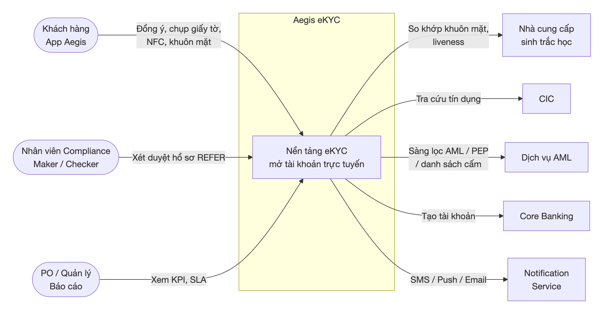
Bối cảnh hệ thống, thành phần, luồng end-to-end, cây quyết định, bản đồ màn hình.
System context, containers, end-to-end flow, decision tree, screen maps.
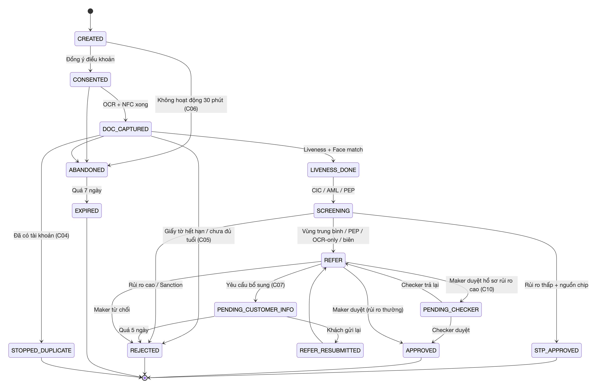
BR, FR, NFR, quy tắc, mô hình trạng thái; mỗi yêu cầu gắn test case.
BRs, FRs, NFRs, rules and a state model; every requirement linked to tests.
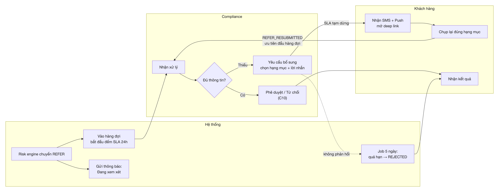
Yêu cầu bổ sung, ma trận thông báo, SLA 24 giờ và leo thang.
Requests for more info, notification matrix, 24-hour SLA and escalation.
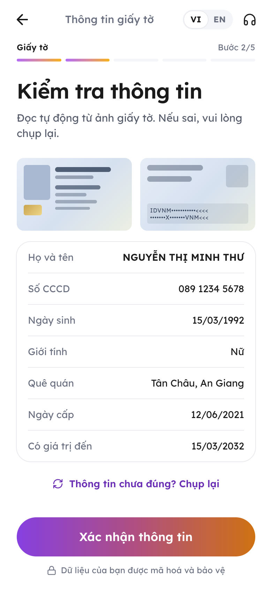
Thành phần, nội dung, điều hướng, thông điệp lỗi, API và trợ năng từng màn.
Components, copy, navigation, error messages, API and accessibility per screen.
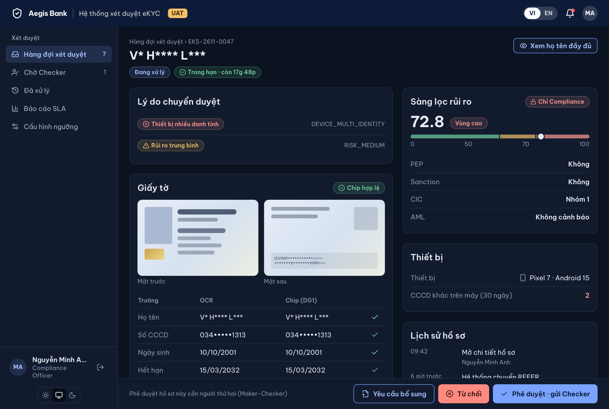
Hàng đợi, chi tiết hồ sơ, Maker-Checker, báo cáo SLA, cấu hình ngưỡng hai người duyệt.
Queue, case detail, maker-checker, SLA report, two-person threshold changes.
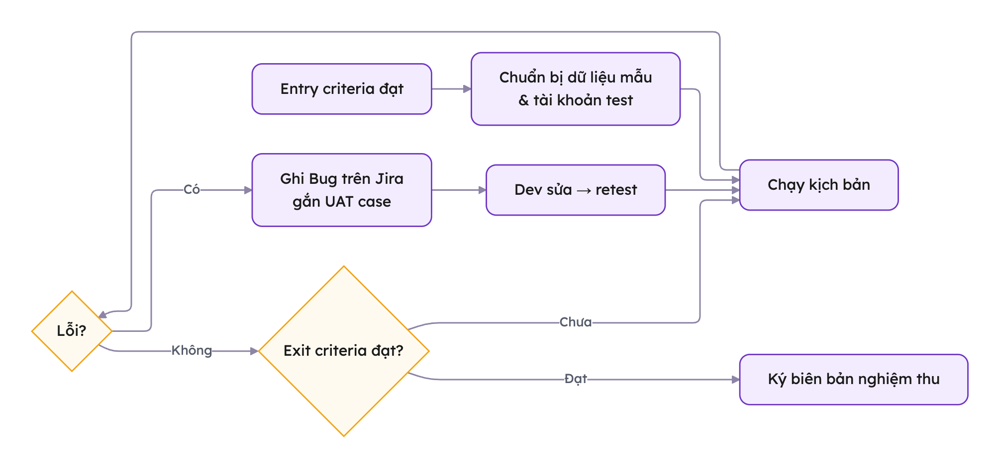
Bảng quyết định, giá trị biên, chuyển trạng thái; lỗi phát hiện và rủi ro còn lại.
Decision tables, boundary values, state transitions; defects found and residual risk.
Giao diệnScreens
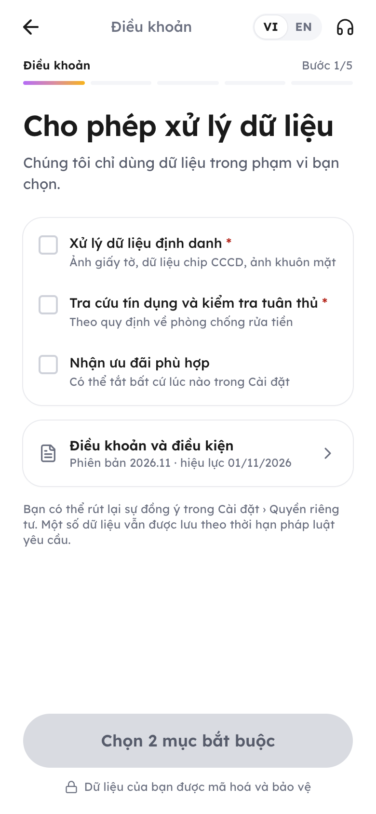
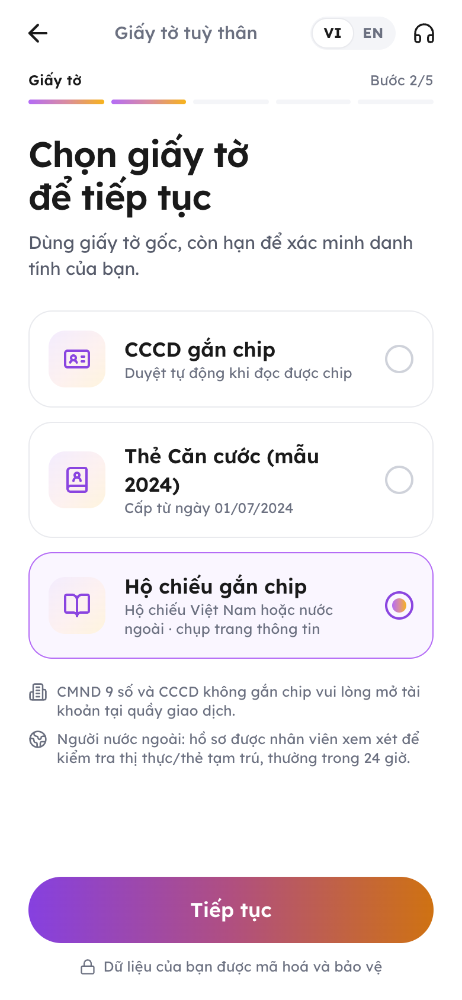
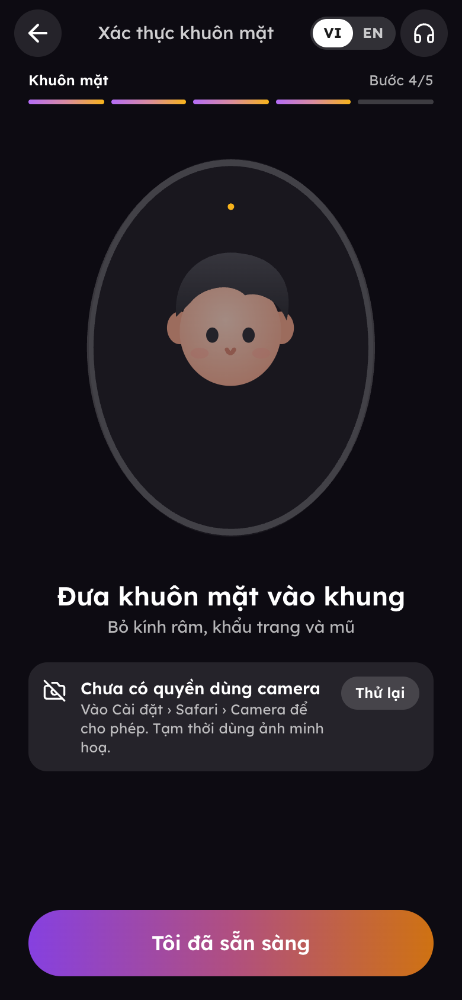
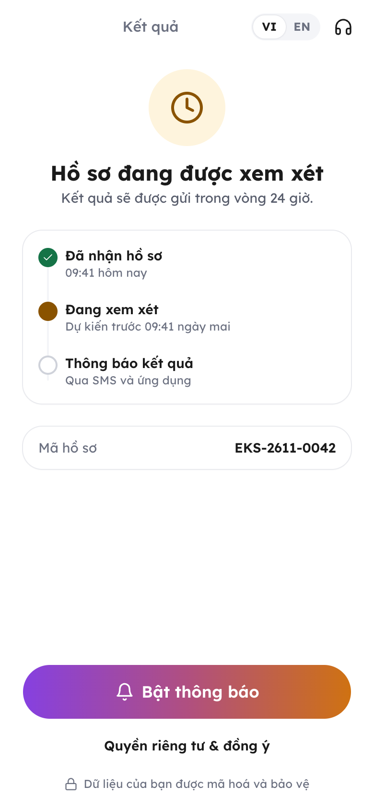
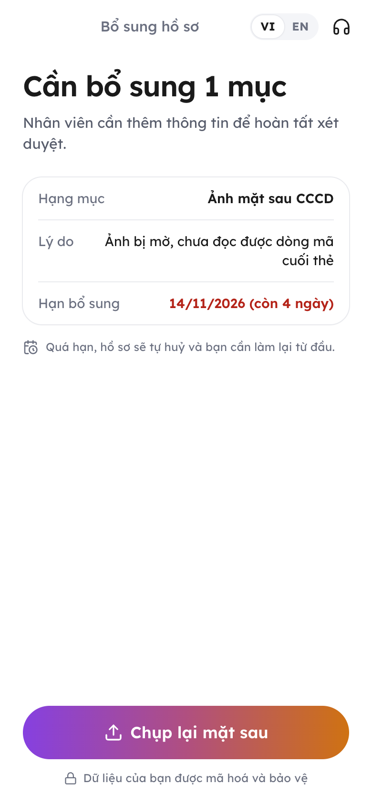
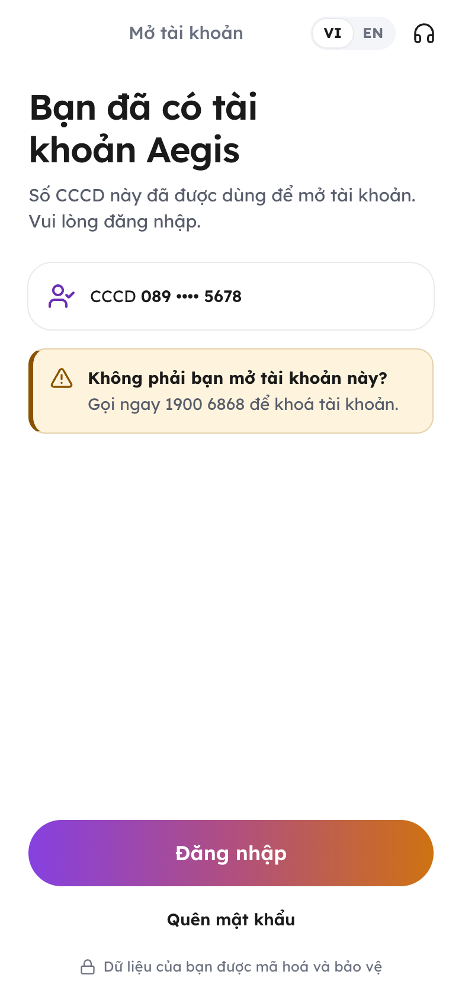
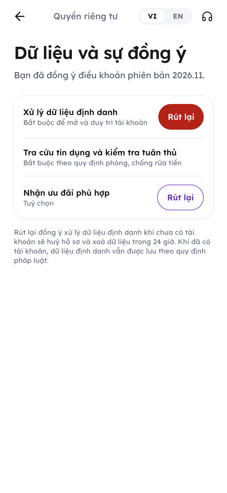
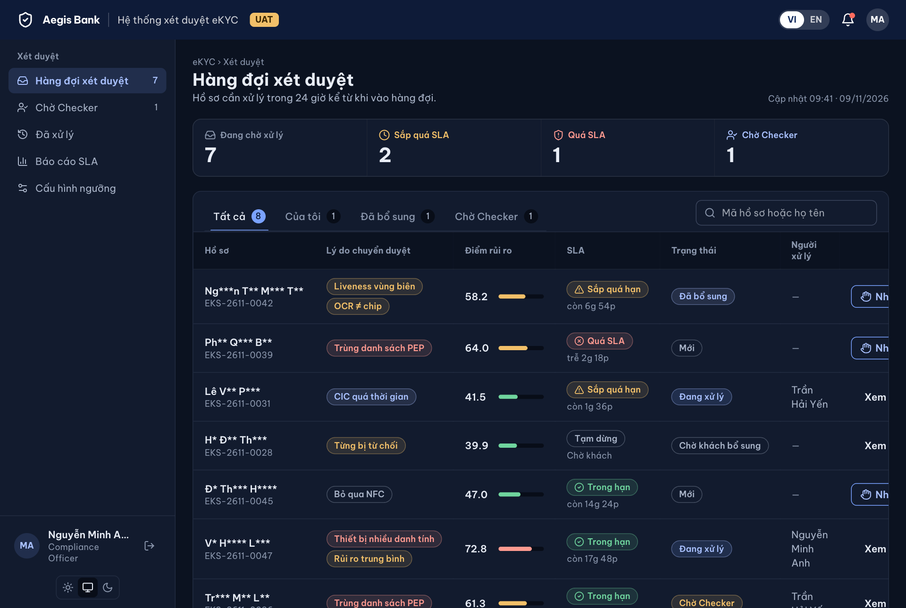
Kết quảResults
test case đạt, 0 không đạt; 4 đạt một phần và 11 chưa chạy được ghi rõ lý do.
test cases passed, 0 failed; 4 partial and 11 not run, each with a reason.
lỗi phát hiện và sửa trước khi bàn giao – 3 lỗi tìm ra khi rà soát đặc tả và viết test case, chưa cần chạy thử.
defects found and fixed before hand-off – 3 caught by reviewing the spec and writing test cases, before running anything.
hồ sơ mẫu phủ mọi nhánh quyết định: duyệt tự động, chuyển duyệt, từ chối, trùng khách, hộ chiếu nước ngoài.
test personas cover every decision branch: auto-approve, refer, reject, duplicate, foreign passport.
Bài họcLessons
Công cụTools
Lưu ýDisclaimer
Aegis Bank là ngân hàng giả định. Toàn bộ dữ liệu là dữ liệu mẫu, không có thông tin khách hàng thật. Số hiệu văn bản pháp lý là bản nháp để phân tích, cần Pháp chế xác minh. Camera, chip NFC và điểm sinh trắc trong bản demo là mô phỏng.Aegis Bank is fictional. All data is sample data; no real customer information. Regulation references are analysis drafts pending legal review. Camera, NFC chip and biometric scores in the demo are simulated.